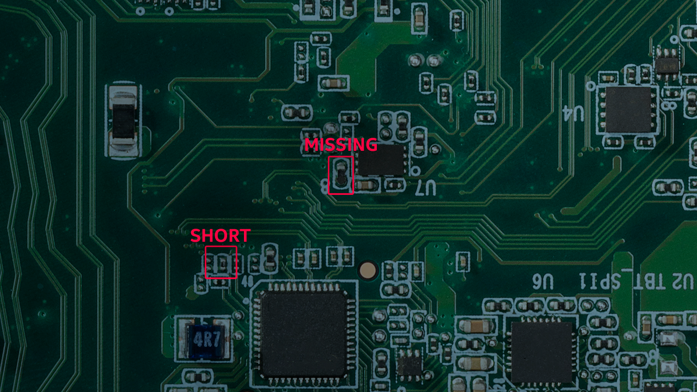

Overview
Deploy an industrial AI application for product quality checks using the Intel® Smart Edge Open platform. Includes support for two types of defect detection: missing components and short circuits due to solder bridge formed during the assembly process.
To run the reference implementation, you will need to first download and install the Intel® Smart Edge Open Developer Experience Kit.
Once you have installed the Intel® Smart Edge Open Developer Experience Kit, select Configure & Download to download the reference implementation and the software listed below.

- Time to Complete: 1-1.5 hours
- Programming Language: Python*, C++
- Available Software:
- Intel® Smart Edge Open version 22.03 or above
- Intel® Open Edge Insights version 3.0.0
Target System Requirements
Intel® Smart Edge Open Nodes
- One of the following processors
- Intel® Xeon® Scalable processor.
- Intel® Xeon® D processor.
- At least 64 GB RAM.
- At least 265 GB hard drive.
- An Internet connection.
- Ubuntu* 20.04 LTS Server.
- IP camera or pre-recorded video(s)
How It Works
The Printed Circuit Board (PCB) defects detection is a reference implementation enabled for detection of defects in the components assembly in a factory environment. The IP Camera will record the video of the assembled boards moving over a conveyor belt. These IP cameras will stream the video to Open Edge Insights (OEI) video processing applications namely Video Ingestion, Video Analytics, Time Series analysis, etc. using the RTSP streaming protocol. The captured video is analyzed and filters out selected images for further defect analysis.
The Intel® Smart Edge Open Developer Experience Kit platform infrastructure is used to deploy the application pods of OEI performing image processing functionality. The purpose of this reference implementation is to showcase how the Intel® Smart Edge Open Developer Experience Kit platform can be used for deploying Industrial AI applications for product quality check. There are two types of defect detection supported in this demo: missing component detection and short circuit due to solder bridge formed during the assembly process.
The video file used in this reference implementation is pcb_d2000.avi which is sent from the camera stream pod as RTSP stream. This PCB defects detection reference implementation includes five types of application pods in the Intel® Smart Edge Open Developer Experience Kit Edge Nodes.
Edge Insights for Industrial from Intel is a set of pre-validated ingredients for integrating video and time-series data analytics on edge compute nodes.
 Figure 1: Architecture Diagram
Figure 1: Architecture Diagram
- Config Manager Agent
Config Manager Agent is an OEI service responsible to put the OEI services configs to the OEI config manager data store. It creates required provisioning folders with the right permissions needed for other OEI services via volume mounts. - Camera Stream
The Camera Stream pod simulates IP cameras in the real environment. It is used to send recorded video pcb_d2000.avi file as an RTSP stream like an IP camera. On LTE/5G Network real-time deployment, replace Camera Stream pod with a real IP camera. - Video Ingestion
The Video Ingestion pod is mainly responsible converting the video received from camera stream into frames. It filters the frames and ingests these video frames into the OEI stack for further processing and defect analysis. - Video Analytics
The Video Analytics pod receives frames from the Video Ingestion pod, performs classifier converting to Universal Disk Format (UDF), and does the required inferencing on the chosen/support hardware (CPU, VPU) using OpenVINO™ toolkit. In this PCB demo, udfs filter configured as pcb. pcb_filter which will detect a defect on the board that has any solder short or missing part. Video Analytics identifies the defects and marks the defect on the images. - Web Visualizer
The Web Visualizer pod mainly displays the frames on GUI display received from Video Analytics pod.
The block diagram below shows the video/image flow through the application.

Get Started
These instructions walk you through installing and uninstalling an example PCB Defect Detection reference application using commands. After installation, you will be able to see the application is running on the cluster. The uninstall commands can be used to uninstall the application.
Installation Prerequisites
To run the reference implementation, you will need to first download and install the Intel® Smart Edge Open Developer Experience Kit.
Ensure that the following conditions are met properly to ensure a smooth installation process for a reference implementation done through Edge Software Provisioner (ESP) Intel® Smart Edge Open Developer Experience Kit package.
Hardware Requirements
Make sure you have the hardware as specified in the Target System Requirements section for fresh ESP Intel® Smart Edge Open Developer Experience Kit installation.
Ensure that the steps below are completed in the ESP Intel® Smart Edge Open
Developer Experience Kit installation:
- Proxy Settings
If you are behind a proxy network, ensure that proxy addresses are configured in the system: - Ensure the /etc/wgetrc file is configured with required proxy settings as follows:
Date and Time
Make sure that the date and time are in sync with current local time.Create Non-Root User
Make sure that non-root user with name and password smartedge-open and with sudoers permission is created. If not available, follow the instructions below.To create a user smartedge-open, execute the command:
A password for the given user is required:
1passwd "smartedge-open"
As some tasks require root privileges, the non-root user needs to have a possibility to become a root:
1echo "smartedge-open ALL=(ALL) NOPASSWD:ALL" | sudo tee /etc/sudoers.d/smartedge-open
Exchanging SSH keys between hosts
Exchanging SSH keys between hosts permits a password-less SSH connection from the host running Ansible to the hosts being set up. If password-less SSH is not permitted, follow the instructions below to exchange SSH keys between hosts. Generate and install the public key on your host by logging in as root and executing the below commands:
In the first command, the Edge Controller host must have a generated SSH key. The SSH key can be generated by executing ssh-keygen and obtaining the key from the output of the command.
In the second command, the generated key must be copied to every Edge Node host, using the ssh-copy-id command.
Install Python dependent libraries
Use the following commands:
Install the Reference Implementation
Select Configure & Download to download the reference implementation and then follow the steps below to install it.
- Make sure that the Target System Requirements are met properly before proceeding further.
- For single-device mode, only one machine is needed. (Both controller and edge node will be on the same device.)
- For multi-device mode, make sure you have at least two machines (one for controller and other for Edge Node).
NOTE: Multi-device mode is not supported in the current release.
- Open a new terminal and login to server as a non-root user.
1
ssh smartedge-open@<server-ip-address>
Confirm that the server is configured with ESP Intel® Smart Edge Open Developer Experience Kit as prerequisite.
Move the downloaded zip package to /home/<non-root-user> folder.
1mv<path-of-downloaded-directory>/Wireless-network-ready-pcb-defect-detection.zip /home/<non-root-user>
Go to the /root directory of the non-root user using the following command and unzip the RI:
Go to Wireless-network-ready-pcb-defect-detection/ directory:
Change permission of the executable edgesoftware file:
Run the command below to install the Reference Implementation:
- Installation of the package starts.

Figure 3: Installation Start Screen
- When the installation is complete, you see the message Installation of package complete and the installation status for each module.
NOTE: Installation failure logs will be available at: /var/log/esb-cli/Wireless_NetworkReady_PCB_defect_detection_<version>/Wireless_NetworkReady_PCB_defect_detection/install.log
Where <version> is the package version downloaded.

Figure 4: Installation Successful If Intel® Smart Edge Open Developer Experience Kit is installed, running the following command should show output similar to the image below. All the pods should be either in the running or completed stage.

Figure 5: Pods Status
Note: The status of the Visualizer pod might be CrashLoopBackOff. This is an expected behavior and can be ignored.If PCB Defect Detection is installed, running the following command should show output as follows:

Figure 6: PCB Defect Detection Pods Status Run the below command to make sure the network policy is created:
Note: In Intel® Smart Edge Open, the default network policy blocks ingress traffic to all pods, hence the pcb defect detection pod network policy is created to allow the ingress traffic.

Figure 7: PCB Defect Detection Network Policy Run the command below to check the Docker* images and their details:
List the reference implementation deployed module using the following command:

Figure 8: PCB Defect Detection Module List Uninstall the reference implementation module using the following command:

Figure 9: Uninstallation Successful Run the command below to make sure the network policy is deleted after uninstallation:
Node Feature Discovery (NFD)
PCB Defect Detection uses the Intel® Distribution of OpenVINO™ toolkit, which is optimized for Intel® processors that support special instructions like AVX512VNNI for optimized performance. The deployment of this application will require the node with this feature supported on the node along with Ubuntu 20.04 OS. This NFD feature ensures to deploy the application on the node supported with these features.
NFD is installed by Intel® Smart Edge Open Developer Experience Kit and running as two pods on Intel® Smart Edge Open, as shown below.
PCB Defect Detection pods scheduled and running successfully on Intel® Smart Edge Open node based on hardware capabilities of Intel® Xeon® Scalable server.
The following output shows a description of one PCB Defect Detection pod, which shows that it is running successfully with the NFD feature.
Multi-Tenancy and Multi-Verticality Feature
Besides covering multiple IoT verticals, the RIs with Intel® Smart Edge Open increase time-to-market for Independent Software Vendors (ISVs) and provide a reference for edge solution builders looking to deploy multi-tenant and multi-vertical services on the edge platform. Intel® Smart Edge Open via the Intel® Smart Edge Developer Experience Kit offers support for multiple software tools/frameworks (including OEI, OpenVINO™, WebRTC) and diverse, multi-segment Reference Implementations to run simultaneously on the same edge platform) showcasing the foundational principals of interoperability across Intel offerings and assets.Multiple Reference Implementations can be deployed on a single instance of Intel® Smart Edge Open Developer Experience Kit using this feature. The Multi-Tenancy and Multi-Verticality feature is supported and tested with the following set of Reference Implementations with Developer Experience Kit v22.03:
- Wireless Network Ready PCB Defect Detection (v5.0.0)
- Telehealth Remote Monitoring (v3.0.0)
NOTE: The reference implementations listed above were validated to support this feature; however, the feature is not limited to these RIs only.
Public Helm Registry for Helm Charts
Installation of PCB Defect Detection Reference Implementation on Intel® Smart Edge Open is accomplished using Helm charts. Earlier Helm charts used to be a part of Reference Implementation installation package. Now a global Helm repo is issued, so that Reference Implementation Helm charts can be accessible from private and public network. This will speed up and ease the process of introducing updates and their integration with the Reference Implementation.
Visualize the Output
To visualize the results, open Google* Chrome and navigate to the links below for respective results:
Web Visualizer
- http://<Controller-System-IP-Address>:30009 -DEV Mode
- http://<Controller-System-IP-Address>:30007 -PROD Mode
Etcd UI
- http://<Controller-System-IP-Address>:30010
To access the visualizer, log in with the username = admin and password = admin@123

Figure 10: Application Results PCB Defect Detection Results
You can view reference input and output videos of the PCB defect detection demo in GitHub.
Refer to the PCB defects detection results section to cross-verify the results on your setup.
Following are the reference input and output videos of PCB defect detection demo.
-
Input PCB rtsp stream: The input video file has three PCBs rotating through the screen are sent from the camera stream pod, two of these boards are defective out of three.
-
Output defect detection on PCB: The Visualizer pod showing the output of defect detection on PCB image, i.e. with red square box defect detection marked as PCB board missing component and solder bridge causing a short circuit.